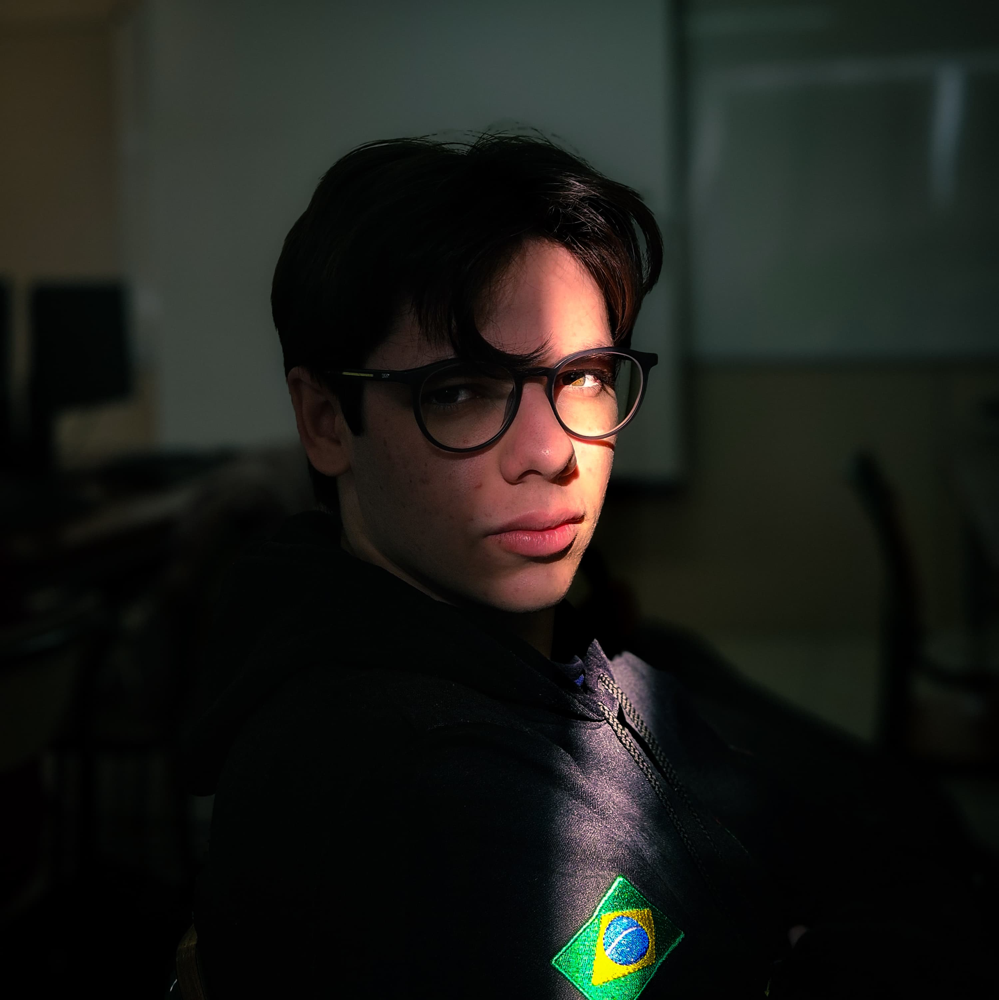

-
Murilo Eduardo Thomé.

- Desenvolvimento completo do site;
- Atuação no documentário;
- Auxílio no roteiro.
-
Mariana Barbosa de Lima.

- Desenvolvimento completo da música;
- Atuação no documentário;
- Dublagem da thinker;
- Auxílio no roteiro e pesquisa.
-
Anthony Testa Hentges.

- Editor do documentário e versões menores;
- Participação no documentário;
- Desenvolvimento da pesquisa;
- Gravação do documentário.
-
Thiago Polesello.

- Preparador dos cenários;
- Ajuda na iluminação e gravação;
- Participação no documentário;
- Auxílio na pesquisa.
-
Laura Robette Grazziolli.
- Desenvolvimento da pesquisa;
- Desenvolvimento do roteiro;
- Atuação no documentário;
- Gravação do documentário.